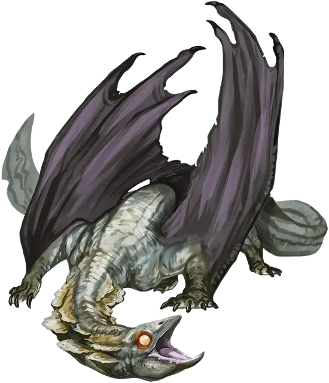

Древний глубинный дракон
Ancient Deep Dragon
Громадный Дракон, нейтрально-злой

Класс Доспеха 20 (природный доспех)
Хиты 201 (13к20 + 65)
Скорость 40 футов, плавая 40 футов, летая 80 футов, копая 40 футов
| мод | спас | ||
|---|---|---|---|
| СИЛ | 23 | +6 | +6 |
| ЛОВ | 16 | +3 | +9 |
| ТЕЛ | 20 | +5 | +11 |
| мод | спас | ||
|---|---|---|---|
| ИНТ | 19 | +4 | +4 |
| МДР | 18 | +4 | +10 |
| ХАР | 21 | +5 | +11 |
Навыки Восприятие +10, Скрытность +15, Убеждение +17
Сопротивление урону психическая энергия, яд
Иммунитет к состояниям испуг, отравление, очарование
Чувства слепое зрение 60 футов, тёмное зрение 300 футов, пассивное Восприятие 20
Языки Общий, Драконий, Подземный
Опасность 18 (20000 опыта)
Бонус мастерства +6
Особенности
Легендарное сопротивление (3/день). Если дракон провалит спасбросок, он может вместо этого сделать спасбросок успешным.
Действия
Мультиатака. Дракон совершает одну атаку Укусом и две Когтями.
Укус. . Рукопашная атака оружием: +12 к попаданию, досягаемость 10 фт., одна цель. Попадание: 17 (2к10+6) колющего урона плюс 11 (2к10) урона ядом.
Коготь. . Рукопашная атака оружием: +12 к попаданию, досягаемость 5 фт., одна цель. Попадание: 13 (2к6+6) рубящего урона.
Хвост. . Рукопашная атака оружием: +12 к попаданию, досягаемость 15 фт., одна цель. Попадание: 10 (1к8+6) дробящего урона. Если целью является существо, оно должно успешно совершить спасбросок Силы Сл 20, иначе станет сбитым с ног.
Изменение формы. Дракон волшебным образом превращается в любое существо Среднего или Маленького размера, сохраняя при это свои характеристики (кроме размера). Дракон принимает истинное обличие, если его хиты уменьшаются до 0, или он использует бонусное действие, для окончания этого эффекта.
Кошмарное дыхание (перезарядка 5–6). Дракон выдыхает облако спор 90-футовым конусом. Все существа в этой области должны совершить спасбросок Мудрости Сл 19. В случае провала существо получает 49 (9к10) урона психической энергией и становится испуганным драконом на 1 минуту. В случае успеха существо получает половину урона без дополнительных эффектов. Испуганное существо может повторять спасбросок в конце каждого своего хода, оканчивая эффект на себе при успехе.
Легендарные действия
Дракон может совершить 3 легендарных действия, выбирая из представленных ниже вариантов. За один раз можно использовать только одно легендарное действие, и только в конце хода другого существа. Дракон восстанавливает использованные легендарные действия в начале своего хода.
Контролирующие споры. Дракон выпускает споры вокруг существа, которое видит в пределах 30 фт. от себя. Цель должна преуспеть в спасброске Мудрости Сл 19 или должна потратить свою реакцию, чтобы совершить рукопашную атаку оружием по случайному существу в пределах досягаемости. Если в пределах досягаемости нет существ или цель не может потратить реакцию, она получает 11 (2к10) урона психической энергией.
Хвост. Дракон совершает одну атаку Хвостом.
Залп спор (стоит 2 действия). Дракон выпускает ядовитые споры вокруг существа, которое видит в пределах 30 фт. от себя. Цель должна преуспеть в спасброске Телосложения Сл 19,в случае провала получая 28 (8к6) урона ядом и становится отравленной на 1 минуту. Отравленное существо может повторять спасбросок в конце каждого своего хода, оканчивая эффект на себе при успехе.
Логово
Глубинные драконы устраивают свои логовища в хорошо укрытых пещерах или безсолнечных пляжах Подземья, и эти места часто недоступны тем, у кого нет возможности летать или плавать под водой. Они заполняют свои логова потайными ходами и укрытиями, которые позволяют им сбежать или устроить засаду на посетителей, если возникнет такая необходимость. Хорошо ухоженное логово изобилует грибами и растениями Подземья, а пол, стены и потолок покрыты коврами из плесени и мха или украшены более крупными грибами и растениями в аккуратно организованных экспозициях.
Показатель опасности древнего глубинного дракона увеличивается на 1 (ПО 19 - 22 000 опыта), когда сражение происходит в его логове.
Действия логова
Логово имеет значение инициативы «20» (проигрывает при равенстве): дракон может выполнить одно из следующих действий в логове; дракон не может выполнять одно и то же действие в логове два раунда подряд:
Глубинное оцепенение. Дракон накладывает заклинание замедление [slow] (оно не требует компонентов заклинания), используя Харизму в качестве базовой характеристики (Сл спасброска от заклинания 16). Заклинание оканчивается раньше, если дракон снова использует это действие логова или если дракон умирает.
Мшистый ил. Дракон призывает похожий на ил мох, который ненадолго покрывает поверхность в логове. Потолок, пол и стены логова становятся труднопроходимой местностью до тех пор, пока инициатива не достигнет «20» в следующем раунде.
Токсичные споры. Дракон заполняет 20-футовый куб, видимый им в пределах 120 фт. от себя, токсичными спорами. Все существа в этой области должны преуспеть в спасбросоке Телосложения Сл 15, в случае провала получая 14 (4к6) урона ядом и становясь отравленными до конца своего следующего хода.
Местные эффекты
Область, окружающая логово легендарного глубинного дракона, изменяется магией дракона, создавая один или несколько из следующих эффектов:
Сохранение знаний. Книги, письма и любые другие письменные формы в пределах 6 миль от логова дракона становятся магически заряженными и не могут быть повреждены немагическими средствами.
Беспокойный сон. Когда существо заканчивает продолжительный отдых в пределах 6 миль от логова, оно должно сначала преуспеть в спасбросоке Телосложения Сл 10, иначе оно не сможет снизить уровень своего истощения. Существа, невосприимчивые к отравлению, невосприимчивы к этому эффекту.
Рост зелени. Растительность и грибы в пределах 6 миль от логова дракона растут быстрее и покрывают большую площадь, чем обычно. Добывание пищи в этой области дает вдвое больше обычного количества пищи.
Опциональные правила
Драконы и врождённое колдовство. Драконы обладают врождёнными способностями к колдовству, и могут с возрастом осваивать новые заклинания при использовании этого опционального правила.
Молодые и более старые драконы могут накладывать количество заклинаний, равное их модификатору Харизмы. Каждое заклинание может быть наложено лишь один раз за день, не требуя материальных компонентов, и уровень заклинания не может превышать трети показателя опасности дракона (округляя в меньшую сторону).
Бонус к попаданию атак заклинаниями дракона равен его бонусу мастерства + его бонус Харизмы. Сл спасбросков от заклинаний дракона равна 8 + его бонус мастерства + его модификатор Харизмы. (Monster Manual)
Драконы и врождённое колдовство. Этот дракон от природы может накладывать пять заклинаний, 1/день каждое, и ему не требуются для этого материальные компоненты. Уровень каждого заклинания не может быть выше 6-го. Заклинание дракона, имеют Сл спасброска 19, и он имеет +11 к попаданию атаками заклинаниями.
Ниже приведен список предлагаемых заклинаний, но вы также можете выбрать заклинания, отражающие характер дракона. Дракон, который от природы накладывает заклинания друидов, ведёт себя иначе, чем тот, кто накладывает заклинания колдуна. Вы также можете дать дракону заклинания более высокого уровня, чем позволяет это правило, но такая настройка может повысить ПО дракона — особенно если эти заклинания наносят урон или накладывают состояния на цели.
• приказ [command];
• диссонирующий шёпот [dissonant whisper];
• огонь фей [faerie fire];
• создание прохода [passwall];
• подводное дыхание [water breathing]. (Fizban's Treasury of Dragons)
Персонализация дракона. Как уже говорилось в «Руководстве Мастера», вы можете настроить блок статистики любого дракона, чтобы отразить его уникальный характер. Незначительные изменения, такие как приведенные ниже, легко сделать, и они не влияют на ПО дракона. (Fizban's Treasury of Dragons)
Языки. Большинство драконов предпочитают говорить на Драконьем, но для общения с союзниками и приспешниками изучают Общий. Но, учитывая высокий Интеллект и продолжительный срок жизни, драконы могут легко выучить дополнительные языки. Вы можете добавить языки в блок статистики дракона.
Навыки. Большинство драконов владеют навыками Восприятие и Скрытность, а многие драконы владеют дополнительными навыками. Как и в случае с языками, вы можете изменить список навыков дракона (даже удвоить бонус мастерства), чтобы отразить его интересы и занятия. Вы также можете наделить дракона владениями инструментами, особенно если дракон проводит время в гуманоидной форме.
Заклинания. Опциональное правило «Бестиария» о том, чтобы сделать драконов с врожденным колдовством, — это простой способ добавить драконам разнообразия, не влияя на их ПО. В Главе 5 «Дракономикон» предлагаются списки заклинаний для разных видов драконов, но вы также можете выбрать заклинания, отражающие характер дракона. Дракон, который от природы накладывает заклинания друидов, ведёт себя иначе, чем тот, кто накладывает заклинания колдуна. Вы также можете дать дракону заклинания более высокого уровня, чем позволяет это правило, но такая настройка может повысить ПО дракона — особенно если эти заклинания наносят урон или накладывают состояния на цели.
Другие черты и действия. Вы можете заимствовать черты и действия у других монстров, чтобы придать дракону уникальную изюминку. Рассмотрим эти примеры:
Изменение формы. Вы можете решить, что дракон приобретает это действие в более раннем возрасте, чем обычно, особенно если вы хотите представить в своей кампании дракона в гуманоидной форме. (См. металлические драконы).
Поглощение урона. Вы можете решить, что красный или золотой дракон не только не получает урон от огня, но и исцеляется от него. (См. мясной голем [flesh golem]).
Облёт. Дракон - проворный летун, быстро вылетающий из зоны досягаемости врагов. (См. перитон [peryton]).
Подражание. Изображение персонажей или их союзников может стать забавным трюком для хитрого дракона. (См. кенку [kenku]).
Омоложение. Вы можете решить, что драконы в вашей кампании, будучи неотъемлемой частью Материального плана, почти невозможно уничтожить. Жизненная сущность дракона может храниться в яйце, из которого он появился на свет, в его кладе или в пещерном зале в центре мира, так же как сущность лича спрятана в филактерии. (См. лич [lich]).
Особые чувства. У большинства драконов есть слепое зрение и темное зрение. Вы можете улучшить зрение до истинного зрения или наделить дракона скоростью рытья или чувством вибрации. (См. зрение и свет).
Прокладывание туннеля. Эта особенность может быть присуща любому дракону, обладающему скоростью копания - он может двигаться сквозь твёрдую породу, оставляя за собой туннель. (См. бурый увалень [umber hulk]).
Описание
Глубинные драконы, устраивающие свои логовища в глубинах Подземья. Глубинные драконы - кошмарные братья цветных драконов. Искаженная магическая энергия их подземного царства дает им возможность выдыхать волшебные споры, которые вселяют страх и увечат разум.
Черно-серая шкура глубинных драконов гладкая, как у саламандры, а глаза у них тусклые. С возрастом их споровое дыхание вызывает цветение грибов на коже, особенно вокруг головы и шеи. Их крылья прикреплены к их передним ногам и могут складываться близко к телу, позволяя глубоким драконам легко маневрировать через относительно узкие туннели.
Глубинные драконы часто хранят секреты, наслаждаясь познанием далеких земель. Многие ищут новые идеи и уловки, которые они могут использовать против других обитателей Подземья, предпочитая социальные манипуляции и хитрые сделки, нежели боевые действия. Глубинные драконы смотрят свысока на любое существо, которое им бесполезно, хотя они готовы торговаться за знания, которых им не хватает.